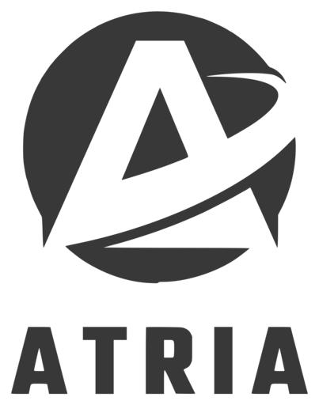

Le système de survie le plus fragile d'un vaisseau, c'est son équipage. ATRIA le traite comme tel : il mesure en continu la santé physique et mentale de chaque membre, prédit les ruptures d'aptitude, et refuse, chiffres à l'appui, un ordre du capitaine qui confierait un poste vital à quelqu'un qui n'est plus en état de le tenir.
Tout tourne sur une carte Raspberry Pi 5 posée sur la table, reliée à deux Arduino et à leurs capteurs, sans aucune liaison avec la Terre. Ce rapport décrit l'idée, les objectifs, le fonctionnement réel du prototype livré, sa résilience, l'organisation de l'équipe, et ce qui reste à faire pour une V1.
Un vaisseau surveille son oxygène avec des capteurs, des seuils et de la redondance. Il surveille son énergie avec des compteurs et des coupures automatiques, son eau avec un recyclage mesuré sans arrêt. Il surveille ses humains avec un questionnaire.
Cette asymétrie est le point de départ du projet. Sur une mission de plusieurs décennies, sans relève, sans médecin joignable et avec des mois de latence vers la Terre, l'équipage est une ressource critique au même titre que l'air ou l'eau. C'est pourtant la seule qui n'est pas instrumentée en continu. Or un réacteur ne ment pas sur son état. Un équipier, si : par fatigue, par fierté, ou parce qu'il ne se rend pas compte qu'il décroche.
Le sujet propose deux pistes pour le pilier HumanTech & HealthTech : une mallette médicale qui traite la crise aiguë, et un assistant psychologique qui recueille le ressenti déclaré. Nous avons choisi de ne suivre ni l'une ni l'autre. Entre la crise et le ressenti se trouve ce qui met réellement une mission en danger : la dégradation lente et mesurable qui rend quelqu'un inapte à un poste bien avant qu'il ne tombe malade.
ATRIA ne soigne pas et ne console pas. Il régule : il mesure l'aptitude de chacun, la compare à ce qu'exige chaque poste du vaisseau, et en tire des décisions motivées. Le vaisseau étudié compte 200 personnes à bord, dont 24 en service actif à un instant donné, sur un horizon de planification de 72 heures.
Nous nous sommes fixé cinq objectifs, et pour chacun un critère vérifiable devant le jury.
| Objectif | Critère de réussite |
|---|---|
| Mesurer l'équipage sans questionnaire | Chaque indicateur affiché remonte à un capteur ou à un modèle identifiable, et sa source est visible au dashboard. |
| Décider de façon déterministe et motivée | Deux exécutions sur les mêmes données donnent la même décision, et chaque refus porte son motif chiffré. |
| Laisser le dernier mot à l'humain | Toute décision d'ATRIA peut être contredite par le capitaine, et la dérogation apparaît au journal avec son auteur et son heure. |
| Fonctionner coupé de la Terre | Le système livré tourne entièrement sur la carte, réseau extérieur débranché, y compris les modèles d'IA. |
| Prouver en direct | La chaîne badge, visage, geste, conduite, refus se déroule sur le vrai matériel devant le jury, sans intervention au clavier. |
Le prototype tient sur une table. Deux Arduino font l'acquisition dans deux compartiments, l'infirmerie et le réacteur, et remontent leurs mesures en USB série au Raspberry Pi 5, qui porte tout le reste : la caméra, le micro, la décision, les modèles d'IA, la base de données et les interfaces.
INFIRMERIE RÉACTEUR
Arduino Mega ADK Arduino Mega 2560
RC522, MQ-2, DHT22, son, buzzer DHT22, écran LCD 1602
| |
+------------ USB série ------------+
|
v
RASPBERRY PI 5, 4 Go, Debian 13 + caméra C270, micro QuadCast
|
+-----------------+------------------+
v v v
atria-terminal atria-api atria-llm
ports série FastAPI, port 8000 llama.cpp, Qwen 1,5B
écran PiTFT caméra, micro 127.0.0.1:8080
badge, 4 boutons sûreté, dashboard lecture seule
| |
+--> SQLite <-----+
~/atria/data/atria.db, mode WAL
Les trois services sont des unités systemd indépendantes. Ils ne se parlent pas directement : les deux processus qui décident et qui écrivent sur le matériel échangent par la base SQLite, en mode WAL. Si l'un tombe, systemd le relance en quelques secondes et les autres continuent.
| Élément | Rôle | Branché sur |
|---|---|---|
| Raspberry Pi 5, 4 Go | Calculateur unique, sans dissipateur, alimentation 5 V 5 A | Tout le reste |
| Arduino Mega ADK | Passerelle de l'infirmerie, trame de mesures toutes les 250 ms | Pi, USB |
| Lecteur RC522 | Badge NFC : identité, rôle, ouverture de session | Mega ADK, SPI |
| MQ-2 | Fumée et gaz, déclencheur de la crise incendie | Mega ADK, A1 |
| DHT22 × 2 | Température et humidité des deux compartiments | Mega ADK A3, Mega 2560 A1 |
| Capteur de son, buzzer | Niveau sonore, bip à la lecture d'un badge | Mega ADK, A0 et D6 |
| Arduino Mega 2560 | Nœud du compartiment réacteur | Pi, USB |
| Écran LCD 1602 | Consignes de compartiment (« ÉVACUEZ », « SCELLÉ »), acquittées par la carte | Mega 2560, contraste par potentiomètre |
| Écran PiTFT 2,8 pouces | Terminal de bord, 320 × 240, quatre boutons | Pi, GPIO |
| Caméra Logitech C270 | Visage (second facteur), gestes, expressions, somnolence | Pi, USB |
| Micro HyperX QuadCast | Cris, toux, chocs, transcription des insultes | Pi, USB |
Le connecteur 40 broches du Pi est entièrement couvert par l'écran PiTFT : aucun capteur n'est branché directement sur la carte, tout passe par les Arduino. Le schéma complet, reproductible dans le simulateur Wokwi, est versionné dans hardware/wokwi/.
| Unité systemd | Ce qu'elle porte | En cas de panne |
|---|---|---|
| atria-api | API FastAPI et dashboard, caméra, micro, boucle de sûreté toutes les 5 s, WebSocket poussé toutes les 3 s | Relance après 3 s |
| atria-terminal | Les deux ports série, l'écran PiTFT, les boutons, le badge, l'ingestion des mesures | Relance après 3 s |
| atria-llm | Serveur llama.cpp, Qwen2.5 1,5B quantifié, écoute seulement en local, priorité réduite | Relance après 5 s |
Chaque poste du vaisseau porte un seuil d'aptitude et un niveau de criticité. Trois postes sont vitaux.
| Poste | Seuil de capacité | Criticité |
|---|---|---|
| Chirurgie | 0,70 | vital |
| Propulsion | 0,65 | vital |
| Navigation | 0,60 | vital |
| Maintenance | 0,50 | haute |
| Serre | 0,40 | haute |
| Laboratoire | 0,45 | moyenne |
Quand le capitaine demande une affectation, le régulateur applique quatre contrôles dans un ordre fixe, et s'arrête au premier qui échoue. Chaque refus est écrit au journal avec la mesure qui l'a déclenché.
| # | Contrôle | Règle |
|---|---|---|
| 1 | Qualification | Le membre possède la compétence exigée par le poste. |
| 2 | Conduite | Score de conduite d'au moins 0,60, sur tous les postes. |
| 3 | Confiance | Sur un poste vital, confiance d'au moins 0,55 : conduite pour 45 %, régularité pour 25 %, appui de l'équipage pour 30 %. |
| 4 | Capacité | Capacité cognitive au moins égale au seuil du poste. Sinon, ATRIA propose un remplaçant apte. |
La conduite se calcule à partir des incidents observés par la caméra et le micro. Chaque incident retire sa gravité, amortie avec une demi-vie de deux heures, sur une fenêtre de vingt-quatre heures : conduite = 1 − Σ gravité × 0,5^(âge / 2 h). Un doigt d'honneur pèse 0,45, un poing fermé 0,20, un pouce baissé 0,15, une expression hostile 0,25, un cri 0,20, une insulte entre 0,12 et 0,90 selon un lexique de 26 expressions.
Voici la réponse réelle du régulateur, relevée pendant nos essais, quand le capitaine affecte à la chirurgie un membre qui vient d'être filmé en train de faire un doigt d'honneur. Sans cet incident, la même affectation est validée.
Le refus n'est pas définitif. Le capitaine, et lui seul, peut déroger. La dérogation est horodatée, attribuée à son auteur et inscrite au journal, qui compte onze types d'entrées et reste consultable à tout moment. Un système critique qui ne laisse aucune porte de sortie à l'opérateur humain finit contourné. Le journal répond par avance à la seule objection sérieuse : que se passe-t-il quand ATRIA se trompe.
Huit modèles tournent sur la carte, sans aucun appel réseau. Sept sont pris sur étagère et utilisés tels quels, la plupart avec des règles écrites par nous par-dessus. Le huitième est écrit et entraîné par l'équipe.
| Modèle | Ce qu'il fait dans ATRIA | Origine |
|---|---|---|
| YuNet | Détecte les visages dans l'image, à 2 Hz hors contrôle d'identité | Sur étagère, OpenCV |
| SFace | Empreinte de 128 réels : second facteur après le badge, et attribution des incidents | Sur étagère, OpenCV |
| MediaPipe Face Landmarker | 52 coefficients d'expression : indice d'hostilité, et somnolence (fermeture des paupières, bâillements) | Sur étagère, règles pondérées par nous |
| MediaPipe Hand Landmarker | 21 points par main : doigt d'honneur, poing fermé, pouce baissé, reconnus par ratios géométriques | Sur étagère, règles par nous |
| YAMNet | 521 classes sonores sur des fenêtres de 3 s : cri, toux, choc, en 14 à 18 ms | Sur étagère, TFLite |
| Vosk, français | Transcription locale, lancée seulement quand YAMNet entend de la parole, pour repérer les insultes | Sur étagère, 66 Mo |
| Qwen2.5 1,5B | Reformule le briefing de quart et les réponses de la console, en lecture seule | Sur étagère, 941 Mo, llama.cpp |
| Rupture d'aptitude | Probabilité qu'un membre passe sous 0,60 de capacité dans les six prochaines heures | Écrit et entraîné par nous |
S'y ajoutent deux briques statistiques : une tendance linéaire qui annonce l'heure à laquelle un membre passera sous le seuil de son poste, et une détection d'anomalie qui compare chacun à sa propre habitude, par écart standardisé sur six jours.
C'est une régression logistique écrite en numpy, sans bibliothèque d'apprentissage, entraînée par descente de gradient avec régularisation et pondération des classes. Elle répond à une question précise : ce membre passera-t-il sous le seuil d'aptitude dans les six prochaines heures ? Elle rend une contribution par variable, ce qui permet d'afficher pourquoi.
| Variables | AUC |
|---|---|
| Capacité seule | 0,922 |
| + pente sur six heures | 0,945 |
| + sommeil de la nuit | 0,955 |
| + dette de sommeil | 0,962 |
La validation se fait en cinq plis groupés par membre : un membre n'est jamais à la fois dans l'entraînement et dans le test. Sur 847 exemples, le modèle retrouve 94,4 % des ruptures réelles, 34 sur 36, au prix de 99 fausses alertes. Nous avons choisi ce compromis : une fausse alerte coûte une vérification, une rupture manquée coûte un poste vital. Le modèle est entraîné sur l'historique simulé du bord (voir la section 4), et il informe sans décider : le régulateur ne s'en sert pas pour refuser.
La console du dashboard répond en langage naturel avec sept outils, tous en lecture seule. Un routeur déterministe choisit l'outil, le modèle de langage ne fait que reformuler le résultat. Il ne dispose d'aucun outil d'écriture : il ne peut affecter personne, annuler aucun refus, modifier aucune donnée. Cette garantie ne repose pas sur une consigne, elle repose sur son outillage, et la liste de ses outils est affichable.
Sa reformulation passe quatre gardes avant d'être affichée. Elle est rejetée si elle contient un nombre absent du relevé, un mot absent du relevé ou du lexique, un connecteur de causalité, ou un nom qui n'était pas cité. Température 0,1, 160 tokens au plus, 20 secondes de délai. En cas de rejet ou de silence, ATRIA affiche le texte déterministe. Le chat sert à comprendre, l'interface fait foi.
Incendie. La boucle de sûreté tourne toutes les cinq secondes. Au-delà de 300 sur le MQ-2 ou de 45 °C, le compartiment est déclaré en feu. S'il est occupé, ATRIA ne scelle pas : elle ordonne l'évacuation et affiche « ÉVACUEZ » sur l'écran du compartiment. Une fois le compartiment vide, elle scelle la cloison et affiche « SCELLÉ ». Quand la fumée retombe, la cloison est rouverte. Le capitaine peut forcer le scellement, ce qui est journalisé comme une dérogation. L'écran LCD du réacteur acquitte chaque consigne, ce qui prouve qu'elle est réellement affichée.
Isolement d'une personne. ATRIA calcule un risque à partir de l'agressivité observée, d'un effondrement de l'état et d'une fixation sur une même personne. À 0,45 elle alerte, à 0,70 elle propose un isolement. Elle ne l'applique jamais seule : le capitaine confirme, rejette ou lève, et un rejet bloque toute nouvelle proposition pendant trente minutes. ATRIA ferme des cloisons, pas des gens.
Contamination. Une toux reconnue par YAMNet crée un symptôme rattaché au compartiment. ATRIA remonte alors les contacts : le premier rang (présents dans l'heure) puis le second rang par co-présence sur douze heures, visibles pour chaque membre.
Personne ne déclare ses affinités. Le lien entre deux membres part du temps réellement partagé dans un compartiment, et les frictions observées le tirent vers le négatif. Un incident devant six personnes ne crée pas six inimitiés : chaque témoin n'en reçoit qu'un sixième, et l'hostilité sature. Il faut que la friction se répète avec la même personne pour que le lien bascule. Le graphe actuel compte 24 membres, 12 affinités et 6 hostilités.
Le badge ne suffit pas. Après la lecture du badge, la caméra compare le visage présenté aux gabarits enrôlés : similarité cosinus d'au moins 0,363 sur trois images en moins de huit secondes, cinq gabarits par membre. Seule l'empreinte de 128 réels est conservée, jamais la photo. Un badge prêté est refusé. Le porte-clés ouvre les données d'un membre d'équipage, et uniquement les siennes, chaque consultation étant écrite au journal. La carte ouvre la vue du capitaine : aptitudes, postes, compartiments, sans les constantes physiologiques de la page de détail.
Les incidents sont attribués à la dernière personne reconnue dans les 45 secondes : un geste se fait souvent main devant le visage, et le détecteur perd alors la tête au moment précis où l'incident compte. Sans personne reconnue, l'incident est journalisé comme anonyme plutôt que collé au hasard.
| Onglet du dashboard | Contenu |
|---|---|
| Bord | État personnel, situation temps réel, briefing de quart, alertes |
| Vaisseau | Plan cliquable des compartiments, occupants, atmosphère, cloisons |
| Équipage | Les 24 membres triés par capacité croissante, fiche détaillée |
| Social | Graphe des liens, affinités, hostilités, isolement |
| Perception | Ce que voient et entendent les modèles, à l'instant |
| Mesures | Capteurs déclenchés à la demande : audit cardiaque, écoute active |
| Prédiction | Risque de rupture par membre, contributions, courbe ROC, erreurs du modèle |
| Sûreté | Crises en cours, décisions de confinement, levée |
| Journal | Toutes les décisions, refus et dérogations, filtrables |
| Console | Questions en langage naturel, sept outils en lecture seule |
| Visage | Enrôlement et contrôle de la reconnaissance faciale |
Sans badge présenté, le dashboard n'affiche qu'un écran de verrouillage. Il est écrit en JavaScript sans framework, servi par la carte elle-même, sans aucune ressource externe. Le terminal PiTFT, piloté par quatre boutons, donne la même information sans navigateur.
Un prototype de quatre jours ne peut pas suivre 24 personnes pendant des semaines. Nous avons donc séparé nettement ce que la carte mesure en direct de ce qu'elle simule pour peupler le vaisseau. La mécanique de décision est la même dans les deux cas : seule la source change.
| Donnée | Source | Détail |
|---|---|---|
| Badge et identité | mesurée | RC522 et reconnaissance faciale, en direct |
| Gestes, expressions, cris, insultes | mesurée | Caméra et micro, attribués à la personne reconnue, ils font chuter la conduite |
| Somnolence | mesurée | Fermeture des paupières, bâillements, plissement, comparés à la base de chacun sur dix minutes |
| Atmosphère des compartiments | mesurée | Température, humidité, son, fumée, dans l'infirmerie et le réacteur |
| Capacité cognitive | mixte | Trajectoire physiologique simulée sur 48 heures, corrigée en direct par la somnolence mesurée |
| Sommeil, stress, dette de sommeil | simulée | Générés par un modèle physiologique pour les 24 membres |
| Présences dans les compartiments | simulée | Sept jours d'historique générés, qui nourrissent le graphe social et le traçage |
| Fumée pendant la démonstration | simulée | Injectée par une route dédiée, journalisée comme simulation, car on n'allume pas de feu devant un jury |
C'est aussi pourquoi le modèle de rupture d'aptitude est entraîné sur l'historique simulé : il démontre la méthode et la chaîne complète, pas une performance clinique. Brancher de vraies mesures physiologiques est la première étape de la V1.
La carte n'a aucun refroidissement actif et atteint 70 °C au repos. Nous avons donc fait de la thermique une contrainte de conception. L'analyse MediaPipe se suspend d'elle-même à 78 °C et ne reprend qu'en dessous de 74 °C, sans jamais couper la vidéo. L'empreinte faciale n'est calculée que pendant un contrôle d'identité, ce qui a fait passer le processeur de l'API de 114 % à 2,5 % et la carte de 81 à 75 °C. Les modules coûteux (écoute, transcription) s'arment pour cinq minutes à la demande. Les calculs lourds sont mis en cache de 20 à 60 secondes, et un seul fil de reformulation peut solliciter le modèle de langage à la fois.
pi/audit.py passe 43 contrôles sur la carte en quelques secondes : alimentation et bridage, température, présence des quatre périphériques USB, services, fraîcheur des mesures de chaque compartiment, temps de réponse des quatorze routes du dashboard, état de chaque modèle. Il sort en erreur au premier échec. Le dernier passage, le 24 septembre, donne 43 contrôles au vert, un avertissement (une baisse de tension brève) et aucun échec. pi/repetition.py rejoue pas à pas les six temps de la démonstration.
La suite de tests est écrite avec pytest, dans pi/tests/, et tourne sur n'importe quelle machine, sans matériel : chaque test travaille sur une base SQLite temporaire, et la caméra, le micro et les modèles sont neutralisés.
| Niveau | Tests | Ce qu'il couvre |
|---|---|---|
| Unitaires | 286 | Calcul de la conduite, ordre des refus, dérogation, confinement, graphe social, régression logistique, reconnaissance des gestes, garde thermique, lecture des trames série, gardes du modèle de langage |
| Fonctionnels | 20 | Les treize routes du dashboard, les accès réservés au capitaine, les routes biométriques protégées |
| Bout en bout, local | 2 | La démonstration rejouée par l'API : affectation validée, geste, refus, dérogation, journal, puis incendie, évacuation, scellement, levée |
| Bout en bout, sur la carte | 19 | Contrôles en direct sur le vrai prototype, lancés avec pytest -m pi depuis le réseau du vaisseau |
Les tests unitaires, fonctionnels et bout en bout locaux tournent automatiquement sur GitHub Actions à chaque envoi, sous Python 3.11 et 3.13.
Le dépôt contient la procédure d'installation depuis une carte SD vierge, la documentation matérielle broche par broche, le montage, le schéma Wokwi reproductible, et un journal des dix écueils rencontrés avec leur solution : alimentation par l'USB d'un ordinateur plafonnée à 600 mA, bibliothèque GPIO incompatible avec le Pi 5, broches SPI inversées, 3,3 V et 5 V mélangés sur une même rangée, carte d'extension enfichée à chaud, entre autres. La procédure de reprise de la carte sans écran ni réseau, par la carte SD lue depuis un ordinateur, y est décrite pas à pas.
La démonstration se joue sur le vrai prototype, en quatre temps, chacun prouvant une propriété du système.
| # | Temps | Ce qui se passe |
|---|---|---|
| 01 | Le badge ne suffit pas | Melih badge et montre son visage : session ouverte. Alexandre présente le même badge : refusé, son visage n'est pas enrôlé. |
| 02 | Le geste compte | Un doigt d'honneur filmé est reconnu et attribué par reconnaissance faciale. La conduite tombe sous 0,60, et l'affectation au poste vital est refusée avec son motif. |
| 03 | Le feu ne tue personne | Combustion dans la serre occupée : ATRIA ne scelle pas, elle ordonne l'évacuation, puis scelle une fois le compartiment vide. |
| 04 | Les liens se déduisent | Le graphe social montre les affinités et les hostilités, lues dans les présences partagées et les frictions observées. |
| Qui | Périmètre | Livrables |
|---|---|---|
| Alexandre | Montage et acquisition | Assemblage de la machine, câblage des capteurs, firmware Arduino, nœud du réacteur |
| Melih | Montage et exploitation | Assemblage de la machine, services systemd, supervision, scénarios de panne, déploiement |
| Maxime | Logiciel et IA | Régulateur, perception et modèles, dashboard, terminal de bord, documentation |
Nous avons suivi le découpage du sujet en quatre sprints, un par jour. Le suivi est tenu sur GitHub : chaque tâche est une issue, reliée aux commits qui l'ont livrée, rangée dans un tableau kanban par sprint (github.com/users/AirKyzzZ/projects/2). Chaque commit suit la convention type: description (feat, fix, docs), ce qui rend l'historique lisible tâche par tâche. Les tâches de la V1 sont déjà ouvertes dans le même tableau.
| Sprint | Commits | Livré |
|---|---|---|
| 1 · Idéation lundi 21 | 7 | Bancs de test des capteurs, terminal PiTFT et ses boutons, badge et buzzer, identité visuelle et charte |
| 2 · Cahier des charges mardi 22 | 30 | Cahier des charges, base SQLite et journal, capteurs d'ambiance, dashboard multi-onglets, modèle de langage et ses gardes, reconnaissance faciale, affectation et dérogation, nœud du réacteur, schéma Wokwi |
| 3 · Prototypage mercredi 23 | 10 | Surveillance et conduite, graphe social, confinement et confiance, somnolence, écoute YAMNet et Vosk, briefing de quart, modules armables, régression logistique, anomalie, physiologie simulée |
| 4 · Rendus jeudi 24 | 13+ | Page de prédiction et courbe ROC, audit cardiaque, correctifs thermiques et caméra, script de répétition, support de soutenance, tests automatisés, ce rapport |
Le projet représente environ 9 000 lignes de Python, 2 800 de JavaScript et deux firmwares Arduino en production, plus douze croquis de diagnostic écrits pour valider chaque capteur avant de l'intégrer.
Le cahier des charges du mardi fixait un périmètre. Voici honnêtement ce qui en est sorti.
| Engagement | Livré | Écart |
|---|---|---|
| Terminal de bord et badge à deux rôles | oui | Avec, en plus, le visage en second facteur |
| Régulateur et refus motivé, journal des dérogations | oui | Enrichi de la conduite et de la confiance |
| Dashboard de supervision | oui | Onze onglets au lieu de quatre, en JavaScript servi par la carte plutôt qu'en Next.js |
| Crise incendie | oui | Logique complète ; en démonstration, la fumée et la sortie des occupants sont simulées |
| Crise de contamination et traçage | partiel | Détection de toux et traçage des contacts, sans confinement sanitaire |
| Prédiction d'incapacité | oui | Tendance linéaire, plus un modèle de rupture entraîné |
| Console en lecture seule | oui | Sept outils, modèle de langage sous quatre gardes |
| Fonctionnement hors ligne | oui | Aucune dépendance réseau |
| Chaîne ECG et modèle de stress | non | Capteur ECG instable, bancs de mesure seulement ; remplacé par la somnolence mesurée à la caméra |
| Dialogue vocal et refus à voix haute | non | Reconnaissance et synthèse installées, mais la carte n'a pas de sortie audio ; le refus s'affiche |
| Compartiment déporté sans fil | non | Remplacé par un second Arduino relié en USB, plus fiable |
| Boîtier imprimé en 3D | non | Non prioritaire |
| Modèle de langage dans la décision | exclu | Respecté : il ne décide rien |
Le périmètre s'est déplacé plus qu'il ne s'est réduit : la perception par caméra et micro, le graphe social, la confiance et la prédiction entraînée n'étaient pas au cahier des charges. Nous avons privilégié ce qui se démontre en direct sur le matériel disponible.
| # | Évolution | Ce qu'elle apporte |
|---|---|---|
| 1 | Brancher l'ECG et le capteur de pouls, entraîner le classifieur de stress sur WESAD et le valider sur nos propres enregistrements | Une capacité cognitive mesurée, plus simulée |
| 2 | Un lecteur de badge par compartiment, ou des nœuds sans fil ESP8266 | Des présences réelles pour le graphe social, le traçage et le scellement automatique |
| 3 | Sessions par poste de consultation avec expiration, contrôle de rôle sur toutes les routes, contrôle facial fermé par défaut | La frontière entre données médicales et commandement, garantie partout |
| 4 | Refroidissement actif et sortie audio | La surveillance sans interruption, et le refus prononcé à voix haute |
| 5 | Ordonnancement des quarts sur 72 heures | Une planification qui anticipe au lieu de refuser |
| 6 | Tests sur la carte intégrés à la chaîne d'intégration | Chaque modification vérifiée sur le vrai matériel |
Pour faciliter la lecture du jury, voici où ce rapport répond à chaque critère des deux grilles du sujet.
| Axe | Où le vérifier |
|---|---|
| Pertinence et impact de la solution | Section 1 : un problème que les pistes du sujet laissent de côté, la dégradation lente d'un équipage sans relève |
| Faisabilité et qualité du prototype | Sections 3, 4 et 6 : le prototype réel, ce qu'il mesure et ce qu'il simule, la démonstration en direct. Section 9 : le chemin vers une V1 |
| Innovation et complexité technique | Section 3 : refus motivé et dérogation journalisée, huit modèles d'IA sur la carte dont un entraîné par nous, graphe social déduit, deux Arduino, caméra et micro |
| Pérennité, résilience et maintenabilité | Section 5 : fonctionnement hors ligne, services relancés, garde thermique, audit en 43 contrôles, tests automatisés en intégration continue, documentation de reprise |
| Qualité documentaire | Ce rapport, la documentation du dépôt, le tableau kanban et l'historique git décrits en section 7 |
| Axe | Où le vérifier |
|---|---|
| Pertinence et impact pour la mission ESA 2080 | Autonomie totale vis-à-vis de la Terre, sécurité des postes vitaux, gestion d'un incendie sans perte humaine, suivi des liens et de l'isolement à bord (sections 1 et 3) |
| Innovation et différenciation | Un système qui a le droit de refuser un ordre et qui trace qu'on l'a contredit, un modèle de langage sans aucune capacité d'agir, un graphe social que personne ne déclare (sections 1 et 3) |
| Qualité et performance du prototype | Fonctionnement réel sur la carte, audit au vert, suite de tests, modèle à 0,962 d'AUC en validation croisée par membre (sections 3 et 5) |
| Pitch et capacité à convaincre | Une thèse en une phrase et une démonstration en quatre temps, chacun prouvant une propriété du système (résumé et section 6) |
workshop-2026/ pi/atria/ application : API, régulateur, perception, modèles, dashboard (web/) pi/tests/ tests unitaires, fonctionnels et bout en bout pi/audit.py audit de la carte en 43 contrôles pi/repetition.py répétition pas à pas de la démonstration firmware/ croquis Arduino : passerelle, nœud du réacteur, diagnostics hardware/wokwi/ schéma du montage, reproductible dans Wokwi systemd/ unités atria-api, atria-terminal, atria-llm docs/ installation, matériel, montage, écueils, cahier des charges, ce rapport presentation/ support de soutenance brand/ charte graphique ATRIA
cd pi pip install -r requirements-dev.txt pytest # unitaires, fonctionnels, bout en bout local pytest -m pi # bout en bout sur la carte, depuis le réseau du vaisseau python audit.py # sur la carte : audit complet